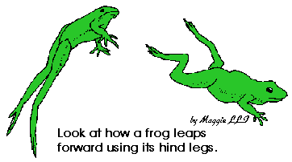
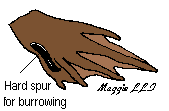
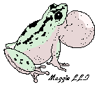

All about Frogs for kids
Frog Facts and Activities
| Back to Frogs | Main Menu | Teacher's Corner |
| Kid's Corner | Holidays & Celebrations | Other Themes |
| Live Grow a Frog Kits | Pet Frogs For Sale | Frog Pictures |


Frogs are a kind of small animal belonging to a group called vertebrates (animals with backbones) known as amphibians. This mean that they live part of their life in water and the other part of it on land. The word amphibian comes from 2 Greek words, "amphi" which means "both" and "bios" which means "life". Amphibians are cold-blooded animals. This mean that their body temperature is the same as the surrounding temperature. Their skin absorbs water into their body so they do not have to drink water to survive.
Examples of other amphibians are salamanders and caecillians.
Frogs have strong hind legs to enable them leap forward at a great distance.
The front legs or arms are short. They are used to prop the frog up when it sits.
The Cricket frog (4cm or 1.5 inch long) can leap 40 times its length in one jump!
How big is the biggest and how small is the smallest ?The largest frog is the giant or Goliath frog of West Central Africa. It can grow up to more than 1 ft long (30 cm). The largest frog in America is the Bullfrog. It can grow up to more than 6 inches long.
{kind=link}
The smallest frog in the Southern Hemisphere is the Brazilian Gold Frog (Brazilian Psyllophryne Didactyla) at 9.8 millimetres (approx. 3/8 of an inch). In the Northern Hemisphere, the smallest frog is the Monte Iberia Eleuth, discovered on a mountain in Cuba in 1996. They measure about 9.6 - 9.8 mm long. Recently (2010), Scientists have discovered a frog the size of a pea on the Southeast Asian island of Borneo. The adult males range in size from 10.6 - 12.8 millimetres, making them the smallest found in Asia, Africa or Europe. This newly discovered amphibian has been named Microhyla Nepenthicola. It is a name of a plant in Borneo on which it lives.
{kind=link}
Frogs are special. They can breathe by means of the lungs and also through their skin. This is because of the way their heart is formed. It has 3 chambers instead of the normal 4.
Where do frogs live?Frogs can be found almost anywhere except the Antartica. However, most species are found in tropical regions. More frogs are found in warmer countries. You can find frogs in water or near places that have water like ponds and streams. However, some frogs will never enter the water. They live mainly on land and go to the water only to mate. Then, there are some kinds that live in trees. These frogs have tiny sticky pads on their fingers and toes to help them cling to the tree trunk as they climb. Some frogs are burrowers. Burrower frogs live on land and have short hind legs and cannot hop. Frogs that live in cold winter places, hibernate during this time. They hibernate either in burrows or burried in mud bottom of ponds.
Frogs also have webbed feet for swimming.
Some have suction disks on the tip of their toes to help them climb.

The back feet of the
Spade-Foot toad has a special hard spur to make
it easier for burrowing.
Some have large webs to assist them in gliding in the air, almost like
flying.
Examples :
Asian Gliding Tree Frogs
The spines on the males' front feet help them to grip on the female
during mating.
The frog's diet consist mainly of insects, small animals like earthworms, minnows and spiders. Most frogs have a sticky tongue. To catch an insect, the frog flips out its tongue rapidly, get the insect and retracts its tongue. Frogs will swallow their prey in one piece because they only have teeth in the upper jaw. Doesn't do much for chewing ! Frogs hunt mostly at night.
Find out more about what frogs really eat and how different species catch their prey
Make a Frog Mask to show the children how a frog catches its pre with tis tounge
Do you know that some frogs do not have a tongue ?Find out more here - tongueless frogs
How does the frog protect itself from the enemy ?The frog has enemies that will eat them. They are bats, heron, fish, racoons, turtles, snakes and even human beings. Human beings eat them and also destroy their natural habitat and prevent them from breeding. Different species of frogs have different kinds of protection.
Some have poison glands in their skin, like a chemical warfare tactic !. The skin will secret and cover the body with the poison and this will deter the enemy from eating them. Some use colors to protect themselves. Some will be very brightly colored body (especially red and yellow) to warn enemies that it taste bad or are poisonous, so stay away! Example of this is the Poison Arrow Frog (Poison-dart). The American Native Indians used their poison for their arrows. The Malaysian Leap Frog will show bright colors to confuse its enemy. Others will use their color as camouflage to blend into the environment to hide from their enemies. The Red-Eyed Tree Frog does this pretty well.
Frogs also have buldging eyes. This is to enable them to have a panoramic view (can view in all directions) and avoid the enemy.
Some will try to fool the enemy by puffing themselves up with air to make it look too big to be swallowed. An example is the Tomato frog. Then there is this False-Eyed frog which hunches over to show its two false eye spots at the back. The spots also oozes out foul smelling liquid. The eye spots are to scare the enemy away and if that does not work, it hopes to deter the enemy from eating it by the foul smell.
The Leopard Frog will play dead by keeping very still and holding its breathe to avoid being eaten. Some will give out a loud scream to startle the enemy to drop them. Some will urinate as it jumps away to give it a bad taste and also to cover their scent.
Singing Frogs? The male frogs are the ones that sing. Different species sing different songs. Males are the ones that have the loud voice. Some females have voices too but they are softer. The males sing (grunts, croaks) to attract the females for mating. Some frogs even have a vocal sac which fills with air and swells up to make the voice even louder, like an amplifier (refer to picture). Some males use their voice as a territorial call to warn other males of the same species that this is their territory.
MatingBefore frogs mate, their bodies go through some changes. These changes are caused by chemicals called hormones. They produce sex cells and changes in appearance of the frogs like having brighter colors. The chemical changes are brought on by changes in the environment - warmer weather, more hours of sunlight or more rainfall. Once the male frog attracts a female to mate. it will sit on the female's back and hold onto it - amplex position. As the eggs are released into the water, the male will release sperm over them to fertilize them and then they will leave.
Some species do it in a different way though. The Darwin male frog will keep the eggs in their vocal pouch. The male Midwife toad will wind the eggs around their hind legs and carry them about until they hatch (see picture). Certain tropical frogs will lay their eggs among leaves or holes in trees where there are rain water. Some will attach their eggs under leaves which are hanging over water. When the tadpoles hatch, they fall into the water. Example of this is the Red-Eyed Tree frog. There are some which will lay their eggs on land, under logs and dead leaves. There are even a stranger ones like the Gastric Brooding Frog which give birth to their young via their mouths! The male Surinam toad collects the eggs laid by the female and puts them on her back. Her skin swells up into a pocket-like thing and covers the eggs.
Frogs that live in tropical and semi-tropical regions, breed during the rainy season. This is because tadpoles need water to survive. Others, breed in spring or early summer.
Life Cycle of frogsThe life cyle of a frog is very interesting. It changes from one form to another form in a process called, metamorphosis. Click here to find out more about the Life Cycle of a frog or download the picture for use in class.
Why are Frogs Important?Frogs are important to human beings. They are a source of food in some countries. They eat insects, some of which are serious pests. We use them for medical research to test for new drugs and students dissect them to learn about anatomy. They are also part of the eco-system which means that whatever happens to them will affect other animals and even us in different ways. We are all connected in the web of life.